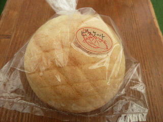

パニス・アンゼリカのビスケットパン
更新日 : 2014/10/25
メロンパンのようですね。

上側がクッキー生地でメロンパン風で、下側はふんわりとした食パン風のパンでした。
個人的には下側のパンが美味しかったです。
このお店は今どうなってるのかな？普通に買い物に行けるようになったのかな？
出雲ドームで販売している時に、店員さんに聞けばよかったです。
島根県出雲市芦渡町905-7
更新日 : 2014/10/25
メロンパンのようですね。

上側がクッキー生地でメロンパン風で、下側はふんわりとした食パン風のパンでした。
個人的には下側のパンが美味しかったです。
このお店は今どうなってるのかな？普通に買い物に行けるようになったのかな？
出雲ドームで販売している時に、店員さんに聞けばよかったです。